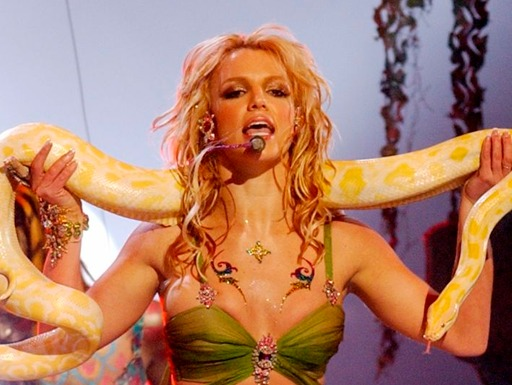

BRITNEY SPEARS
Britney Spears é uma cantora, dançarina e atriz estadunidense e um ícone consagrado da musica pop dos anos 2000. Aos 16 assinou com uma gravadora e lançou seu primeiros álbuns Baby One More Time e Ops...I dit it again em 1999 e 2000 respectivamente. Britney se tornou um sucesso rapidamente e logo foi estabelecida como ícone pop e até creditada por trazer de volta o sucesso do pop para os anos finais da década de 90 e o início dos 2000 tendo sido intitulada até de “Princesa do Pop”. Seu trabalho musical rendeu inúmeros prêmios incluindo um Grammy Award, seis nove Billboard Music Awards, e uma estrela na Hollywood Walk of Fame. Tornou-se um ícone da cultura pop internacional e um das adolescentes mais bem pagas da história da musica que com grandes hits como “Toxic” , “Criminal” , “Gimme More” e “Slave 4 U” que posteriormente acabaram por influenciar artistas como Charlie XCX, Demi Lovato, Miley Cyrus e Marina and the Diamonds. Fora os looks icônicos de videoclipes, performances e aparições publicas que influenciaram adolescente do mundo todo a copiarem o modo de Britney de se vestir.